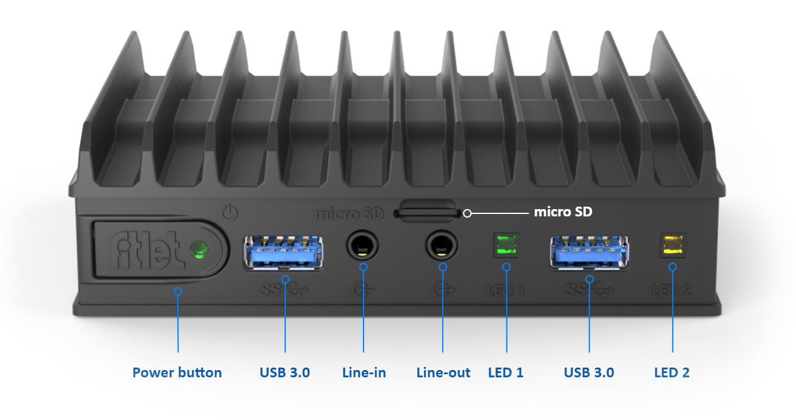
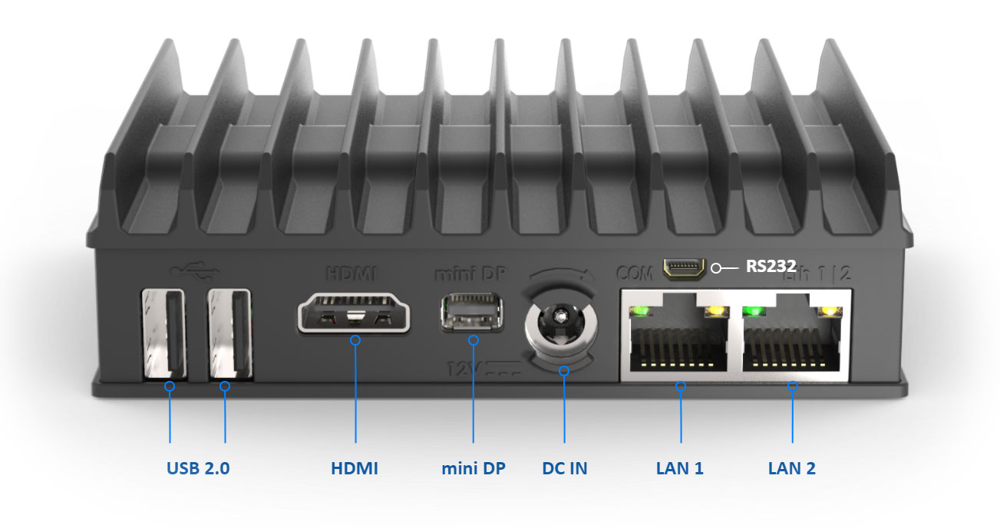

|
marcilr/index.html
by Raymond E. Marcil marcilr@gmail.com
Created Mon 29 Jun 2020 09:12:30 AM AKDT
Last Updated: Sat 29 Oct 2022 12:10:10 PM AKDT
|
-- Ray
|
|
fitlet2
fanless, IoT technology
by Compulab
"fitlet2 is based on quad-core Apollo-Lake Atom
with up to 16 GB RAM.
"It provides performance that not long ago required
a Core CPU that could not be fitted in such a small
passively-cooled footprint due to higher power
consumption."[1]
Minature, fanless pc, used as primary workstation.
The hardware and housing of fitlet2 are designed together
from the ground-up to minimize size and maximize capabilities,
durability and thermal performance.
the Build
Sat 29 Oct 2022 12:53:01 PM AKDT
Starting work on the build of a new 2TB fitlet machine.
Have all the components on hand. Should not be overtly
difficult.
Knock on wood.
Components
- fitlet2 chassis w/motherboard
- 16GB Crucial DDR3L CT204864BF 160B.M16FA DIMM
- 2TB Crucial MX500 2.5 SSD
MDL: CT2000MX500SSD1
PN: CT2000MX500SSD1
SN: 2115E5975B0A
SATA 6Gb/s SED
Assembled in Mexico (RE)
PSID: 244D05A0-04E0-1D46-9F89-69CED83E7663
To purchase
- Whilst I have the cable to attache to the 2.5 SSD drive appear
to be lacking the 2.5" HDD support FACET-card.
- 4x 2.5 SSD drive mounting screws.
Assemble
- Unpackage fitlet2 with associated screws.
- Unpackage Crucial 2TB MX500 2.5 SSD.
Record MDL, PN, SN, SATA, and PSID data off drive above.
- Verified fitlet2 has 16GB Crucial DDR3L ram installed.
- Inspect SSD drive mount cable that needs to be installed in fitlet2.
- Inspect SSD drive plate that needs to be installed to fitlet2.
- Need to track down instuctions or pictures of how the SSD drive mount
cable and SSD drive plate are actually in stalled to the chassis.
- Attaching the 2.5 SSD drive to the chassis requires 4 small angle
head screws for mounting. Not finding extra screws. Took 2 screws
from the working fitlet2. Will need to replace at some point.
fitlet2 front

--fit IoT [2]
Front includes 9 items:
- Power button
- USB 3.0
- Audio line-in
- uSIM
- Audio line-out
- LED 1
- 2x USB 3.0
- LED 2
fitlet2 back

--fit IoT [3]
Front includes 7 items:
- 1x USB 2.0
- HDMI
- miniDP, amazon has miniDP to hdmi
adapters.
- DC IN
- 2x GbE RJ4[6]
| Make: |
CompuLab |
| Model: |
fitlet2 E3950 Barebone |
| Model number: |
FITLET2-CE3950 |
| CPU: |
Atom x7-E3950 quad-core 1.6Ghz |
| Processor brand: |
Intel |
| Ram: |
Max 16GB DDR3 SDRAM |
| |
DDR3L single SODIMM, not included |
| |
1x SO-DIMM 204-pin DDR3L SDRAM |
| |
Up to 16GB Non-ECC DDR3L-1866 (1.35V) |
| |
fitlet2-owners-manual.pdf, p. 5 |
| Graphics coprocessor |
Intel HD Graphics 505 |
| Dual display: |
hdmi + mini-dp |
| Dual Gbit Eth: |
Intel i211 |
| Hard drive |
Serial ATA-600 |
| Weight: |
1.49 pounds |
| First available: |
January 6, 2018 |
| ASIN: |
B0795V4W5G |
| Power consumption: |
5W to 15W |
| Rated: |
4.8 out of 5 stars |
| Dimensions: |
112mm x 84mm x 34mm |
| |
4.4" x 3.3" x 1.3" |
| Orders: |
$451.98
- w/fitlet2, 16GB DDR3L, annd 256GB SATA III 6Gb/s
|
|
| $1,317.98
- w/2x 2x fitlet2, 2x 16GB RAM,
2x 2TB SATA SSD, 2x 2.5 HDD compartment
|
Links
2.5" HDD compartment for fitlet2
https://fit-iot.com/web/product/2-5-hdd-compartment-for-fitlet2/
Comparing Fitlet2 and FitPC2
Jan 02, 2018
Has some great fitlet2 pics
https://www.tinygreenpc.com/blog/micro-pc-apollo-lake-fitlet2-vs-atom-fitpc2/
"CompuLab IoT Gateways
are highly customizable and cost effective industrial systems
designed for Internet of Things connectivity and remote control
and monitoring applications."
https://www.compulab.com/products/iot-gateways
[1] fitlet2
fit-iot.com/web/products/fitlet2/
[2] fitlet2 front
fitlet2-front.jpg (76KB)
front-annotated.jpg
===> fitlet2-front.jpg
Nicely labeled picture of the front of the fitlet2 showing:
Power button, USB 3.0, Line-in, Line-out, LED 1, USB 3.0, LED 2, micro SD
size: 1,303 x 689
Downloaded: Thu 14 Nov 2019 09:32:14 AM AKST
https://fit-iot.com/web/products/fitlet2/fitlet2-specifications/
https://fit-iot.com/web/wp-content/uploads/2017/10/front-annotated.jpg
[3] fitlet2 back
fitlet2-back.jpg (80KB)
back-annotated.jpg ===> fitlet2-back.jpg
Nicely labeled picture of the back of the fitlet2 showing:
2x USB 2.0, HDMI, mini DP, DC IN, LAN 1, LAN 2, RS232
size: 1,303 x 689
Downloaded: Thu 14 Nov 2019 09:35:52 AM AKST
https://fit-iot.com/web/products/fitlet2/fitlet2-specifications/
https://fit-iot.com/web/wp-content/uploads/2017/10/back-annotated.jpg
fitlet2 – build-to-order - fit IoT
The fitlet that I currently own.
https://fit-iot.com/web/product/fitlet2-build-to-order/
|
{kind=link}
{kind=link}
{kind=link}
{kind=link}